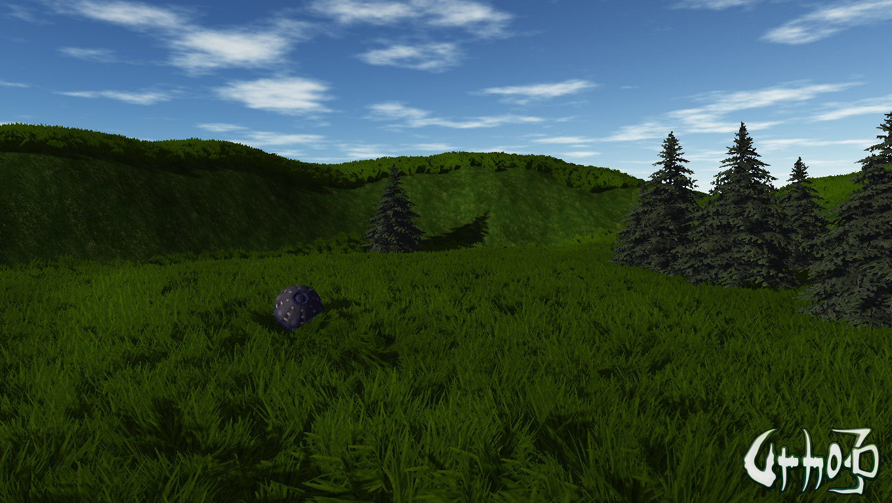
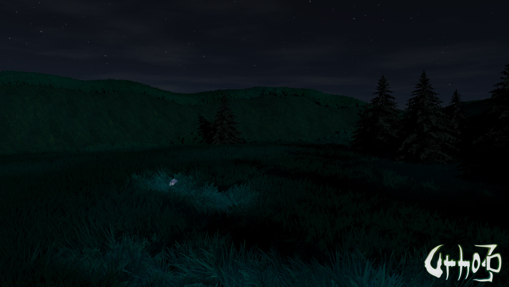
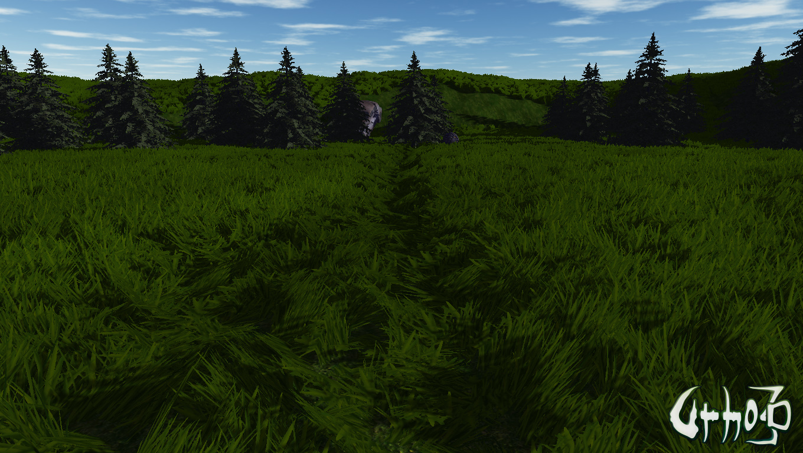
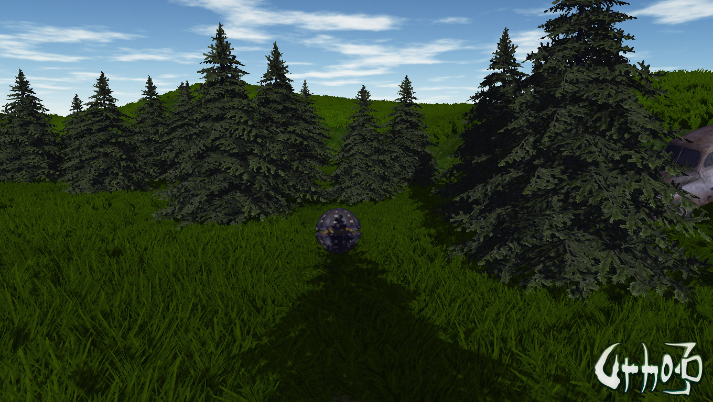
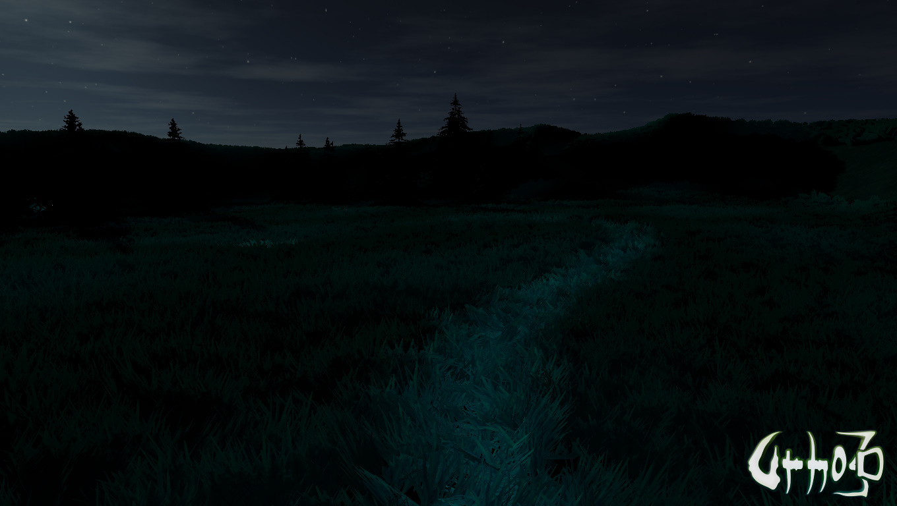
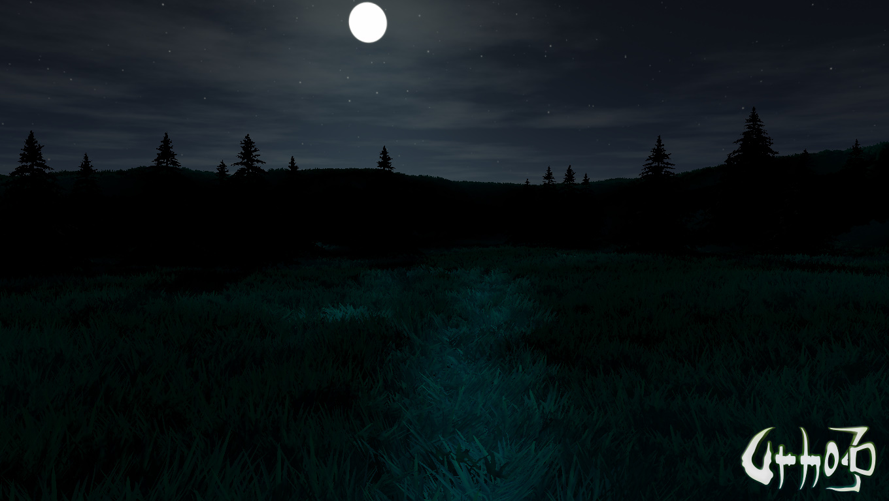

I just wanted to do something.
It took about a week of evenings.
Assets are
not
mine.
Beware of heavy GIFs below (up to 40MB).






https://media.giphy.com/media/w9d4Co3fX913SiBqCV/giphy.gif
https://media.giphy.com/media/5BWVHdvEJarfjfZaxv/giphy.gif
This is
not
code exchange.
Re-check your equipement before looking at the code if you are brave enough to even open it.
All sources are here:
https://github.com/eugeneko/Urho3D/tree/sample-77
Source/Samples/77_Oddball
bin/Autoload/LargeData/77
bin/Autoload/LargeData/Shaders
Tested only with DX11.
Grass animation works only with DX11.
Assets info is here:
https://github.com/eugeneko/Urho3D/blob/sample-77/bin/Autoload/LargeData/77/README.txt